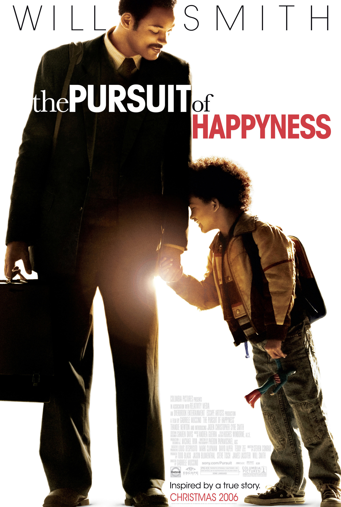

当幸福来敲门
一句话短评：
内容简介：
- 克里斯•加纳（威尔·史密斯 Will Smith 饰）用尽全部积蓄买下了高科技治疗仪，到处向医院推销，可是价格高昂，接受的人不多。就算他多努力都无法提供一个良好的生活环境给妻儿，妻子（桑迪·牛顿 Thandie Newton 饰）最终选择离开家。从此他带着儿子克里斯托夫（贾登·史密斯 Jaden Smith 饰）相依为命。克里斯好不容易争取回来一个股票投资公司实习的机会，就算没有报酬，成功机会只有百分之五，他仍努力奋斗，儿子是他的力量。他看尽白眼，与儿子躲在地铁站里的公共厕所里，住在教堂的收容所里…… 他坚信，幸福明天就会来临。
短评：
- 如果能让自己不再为光阴被虚度，才华被耗尽而流泪，如果能让自己坚定，“我不要似是而非的人生，我要自己做的每一件事都刻骨铭心”，那么这场狂热便是得其所，记住这永远不是最差的人生。 ——Zia
可播放资源：
- 腾讯视频 VIP免费观看
- https://v.qq.com/x/cover/vbr7hkoebjpsrxb/a001483446x.html?ptag=douban.movie